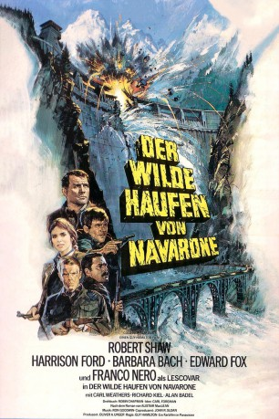
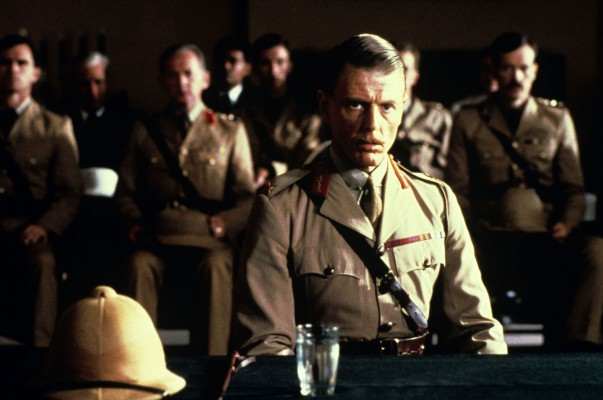
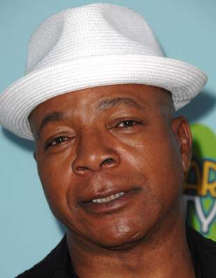
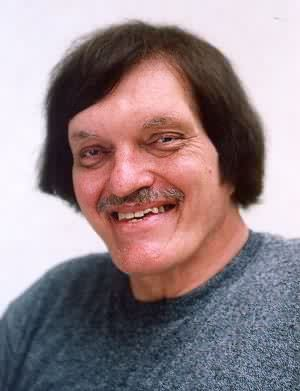
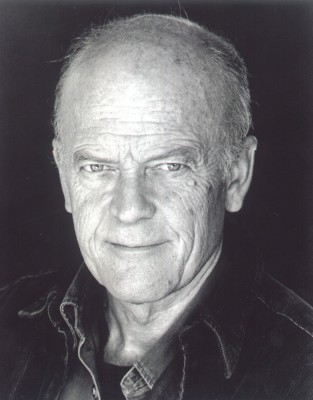
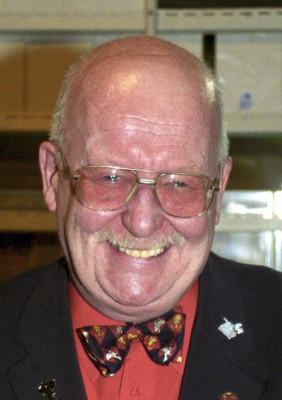
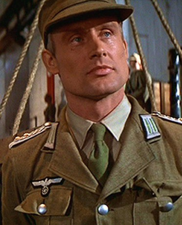
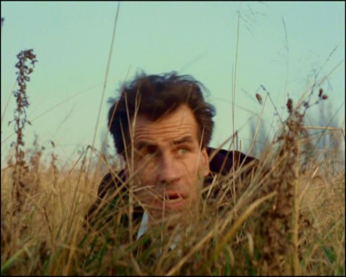

#6220 Der Wilde Haufen von Navarone
Alternativ: Force 10 from Navarone
 
 IMDB-Wertung: 6.3 / 10
IMDB-Wertung: 6.3 / 10  Metascore: 0
Metascore: 0 
Erfolgreich zurück von ihrer Aufgabe, die Kanonen von Navarone zum Schweigen zu bringen, wartet auf Mallory und Miller der nächste kaum durchführbare Auftrag, dieses Mal in Jugoslawien. Unterwegs schließen sie sich dem Kommando 10 an, einer Gruppe zäher, amerikanischer Einzelkämpfer unter der Führung des wagemutigen Oberstleutnant Barnsby. Doch bei der Landung in Jugoslawien fallen sie in die Hände der Deutschen – die Mission scheint gescheitert....
Jahr: 1978
Dauer: 118 Minuten
FSK: 12
Land: England Studio: RCA/Columbia Pictures International VideoTonspuren: DD2.0 - ,
Untertitel: Deutsch,
Auflösung: 1080p (1920x800) Größe: 6021 MB
Genre: Action, Drama, Krieg
Regisseur: Guy Hamilton
Drehbuch: Sönke Wortmann
Soundtrack:
Darsteller:
 Robert Shaw als Mallory
Robert Shaw als Mallory Harrison Ford als Barnsby
Harrison Ford als Barnsby- Barbara Bach als Maritza
-  Edward Fox als Miller
 Franco Nero als Lescovar
Franco Nero als Lescovar-  Carl Weathers als Weaver
-  Richard Kiel als Drazak
- Alan Badel als Petrovitch
-  Michael Byrne als Schroeder
 Angus MacInnes als Reynolds
Angus MacInnes als Reynolds-  Michael Sheard als Sgt. Bauer
- Leslie Schofield als Interrogation Officer 1
- Anthony Langdon als Interrogation Officer 2
- Edward Peel als MP Driver
-  Wolf Kahler als German Soldier
- Patrick Allen als Narrator , uncredited
-  Peter Brace als MP , uncredited
- Tony Clarkin als Partisan Mountain Soldier , uncredited
- Philip Latham als Jensen
- Petar Buntic als Marko
- Richard Hampton als Interrogation Officer 3
- Paul Humpoletz als Sgt. Bismark
- Dicken Ashworth als Nolan
 Christopher Malcolm als Rogers
Christopher Malcolm als Rogers- Nick Ellsworth als Salvone
- Jonathan Blake als Oberstein
- Roger Owen als Blake
- Frances Mughan als Force Ten Team
- Mike Sirett als Force Ten Team
- Graeme Crowther als Force Ten Team
- Jim Dowdall als Force Ten Team
- Michael Osborne als Naval Lieutenant
- Michael Josephs als German Storeman
- Jürgen Andersen als Engineer 1
- David Gretton als Engineer 2
- Paul Jerricho als Lieutenant
- Edward Kalinski als Young German Soldier
- Robert Gillespie als Sergeant
- Hans Kahler als Pilot
- Ramiz Pasic als Mallory's Boy
- Paul Angelis als Lieutenant , uncredited
 Harry Fielder als German , uncredited
Harry Fielder als German , uncredited- Robert Rietty als Drazak , uncredited
Datei: X:\2-Dilogie(N-Z)\Navarone\Wilde Haufen von Navarone, Der (1978, FSK12, 1920x800).mkv seit 17.05.2017
Festplatte: HD Collection-2(A-Z)-3(A-M)
 Alle Filme aus Gruppe '2-Dilogie(N-Z)\Navarone'
Alle Filme aus Gruppe '2-Dilogie(N-Z)\Navarone'